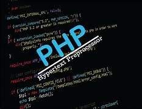

PHP

PHP
PHP bietet viele nützliche Funktionen und Befehle. Im folgenden Text zeige ich einige davon.
switch und case
Der switch-Befehl in PHP wird verwendet, um eine Variable auf mehrere Werte zu prüfen und abhängig davon bestimmten Code auszuführen. Jede Bedingung wird durch ein case-Statement definiert, wodurch der Code übersichtlicher wird, wenn es viele Bedingungen gibt. Der switch-Befehl eignet sich besonders für Fälle, in denen viele if-else-Bedingungen erforderlich wären.
while
Der while-Befehl ist eine Schleife, die Code wiederholt ausführt, solange eine bestimmte Bedingung wahr ist. Das bedeutet, dass PHP so lange die Anweisungen innerhalb der Schleife ausführt, bis die Bedingung nicht mehr erfüllt ist. while-Schleifen eignen sich gut für Situationen, in denen nicht klar ist, wie oft die Schleife durchlaufen werden muss.
if und else
if- und else-Befehle werden verwendet, um Bedingungen im Code zu überprüfen. Wenn eine Bedingung wahr ist, wird der if-Block ausgeführt. Ist sie falsch, wird der else-Block ausgeführt.
date('Y')
Mit dem date-Befehl lässt sich das aktuelle Datum und die Uhrzeit abrufen. Das Format 'Y' gibt zum Beispiel das aktuelle Jahr aus. Diese Funktion ist nützlich, um zeitbasierte Inhalte anzuzeigen, z.B. für Copyright-Angaben.
printf
printf formatiert und gibt Text aus. Es erlaubt die Ausgabe von Variablen in einem vorgegebenen Format. Damit lassen sich Werte direkt in einen Text einfügen, was die Lesbarkeit des Codes verbessert (cleancode) und nützlich ist, wenn bestimmte Werte an bestimmten Stellen ausgegeben werden müssen.
readline
Mit readline können Benutzereingaben über die Konsole abgefragt werden. Diese Funktion wird vor allem in Skripten verwendet, die direkt in der Kommandozeile ausgeführt werden, und ermöglicht interaktive Eingaben.
Rechenoperatoren + - * / %
Die Operatoren +, -, *, / und % dienen in PHP zur Durchführung von Grundrechenarten und Modulo-Operationen. Mit diesen Operatoren kann man Addition, Subtraktion, Multiplikation, Division und das Berechnen des Restes bei Divisionen durchführen. Man brauch sie für alle arithmetischen Berechnungen im Code.
strtolower
strtolower wandelt einen Text in Kleinbuchstaben um. Dies ist hilfreich, um Texte einheitlich zu formatieren oder eine Eingabe zu bearbeiten (damit man besser mit if... arbeiten kann).